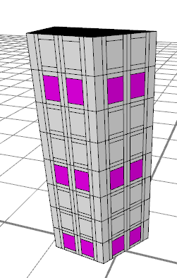

set operation
set(attribute, value)
attribute selector Name of shape attribute to set.
value bool float string bool[] float[] string[] same type as attribute. Value to assign to shape attribute.
Not all shape attributes are writable!
The set operation assigns a value to a shape attribute of the current shape. There are two kinds of shape attributes: builtin attributes such as material.color or scope.tx and generic attributes, which are declared as rule attributes (see CGA attributes).
Related
Examples
Builtin Shape Attributes
| Enable horizontal trim planes | set(trim.horizontal, true) |
| Set x-translation of scope to 0 | set(scope.tx, 0) |
| Set the material color's red component to 0.5 | set(material.color.r, 0.5) |
| Assign the built-in test texture to the colormap channel | set(material.colormap, "builtin:uvtest.png") |
Generic Shape Attributes

attr floorNumber = -1
const floorHeight = 4
Init --> extrude(30)
comp(f) {side : Side }
Side --> split(y) { ~floorHeight : Floor }*
Floor -->
set(floorNumber, split.index)
split(x) { ~1 : Wall | {~3 : Tile}* | ~1 : Wall }
Tile -->
split(x) { 0.5 : Wall | ~1 : MidTile | 0.5 : Wall}
MidTile-->
split(y) { 0.5 : Wall | ~1 : Window | 0.5 : Wall }
Window -->
case floorNumber % 3 == 0 : color(1.0, 0.0, 1.0) X.
else : X.
Store floor index in a generic attribute, floorHeight. The attribute is then used to color the windows on every 3rd floor in pink.